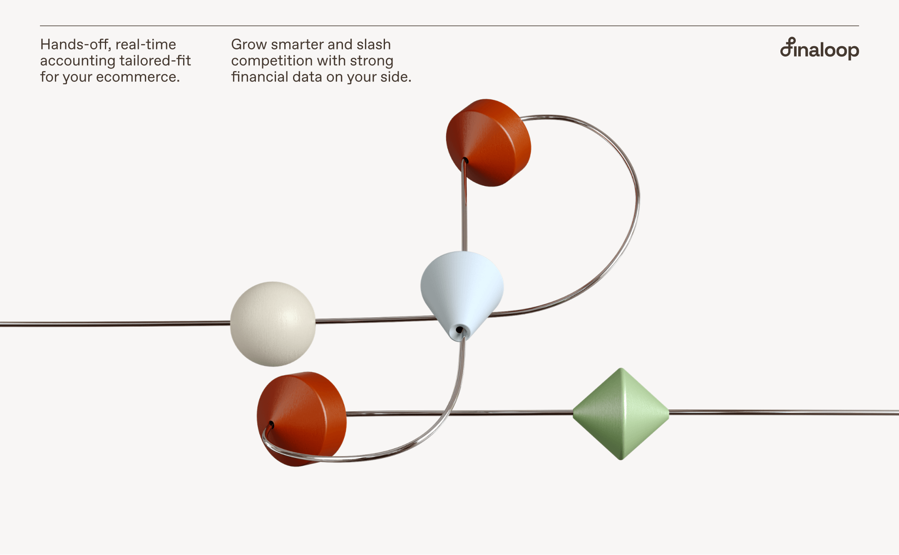
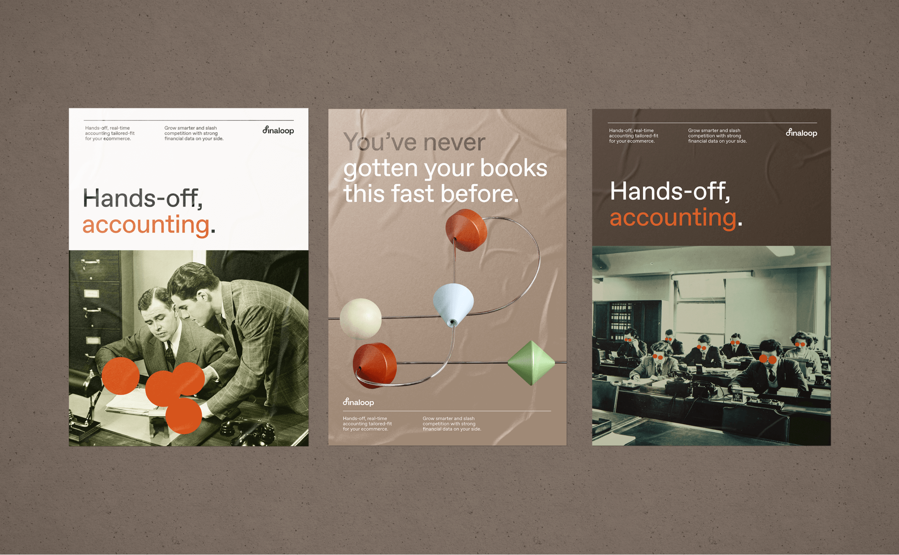
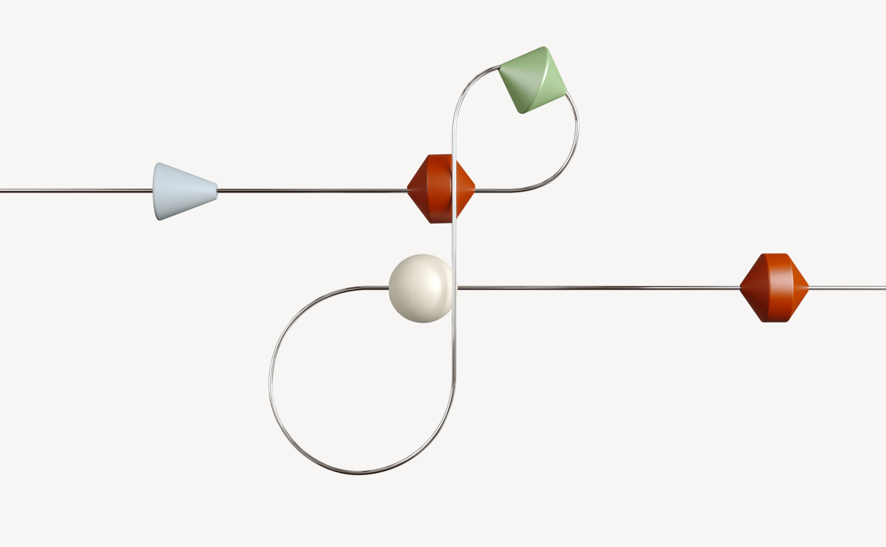
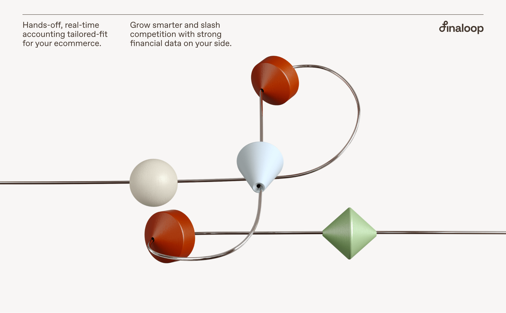
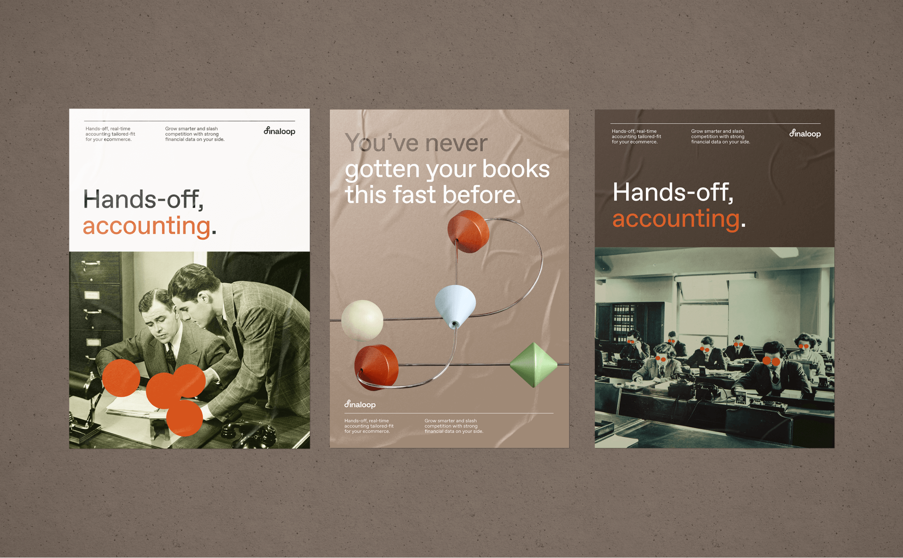
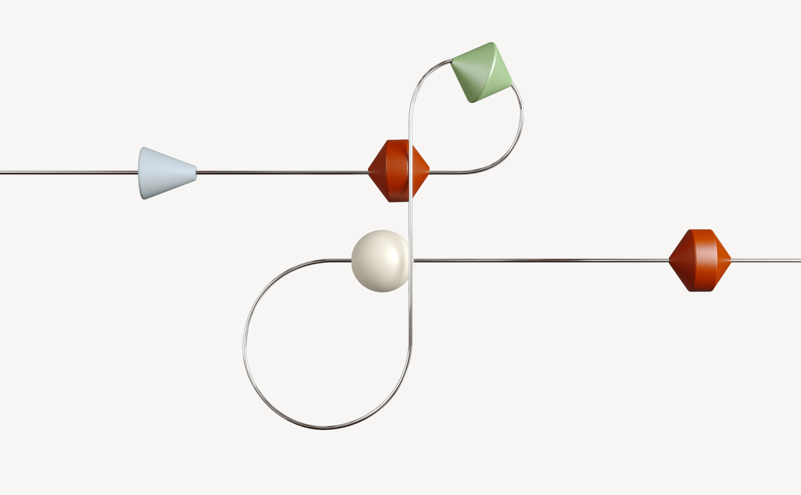
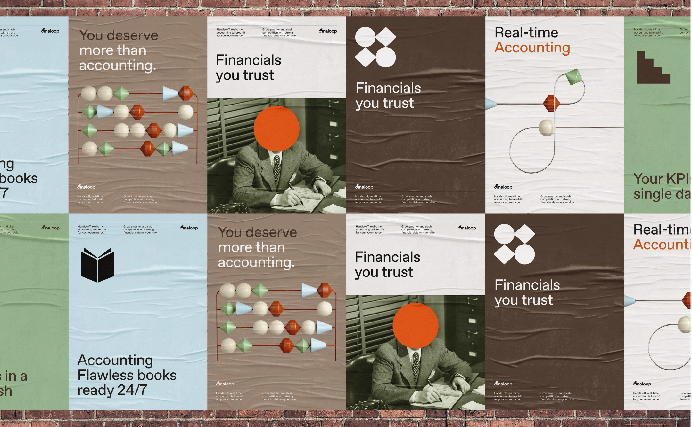
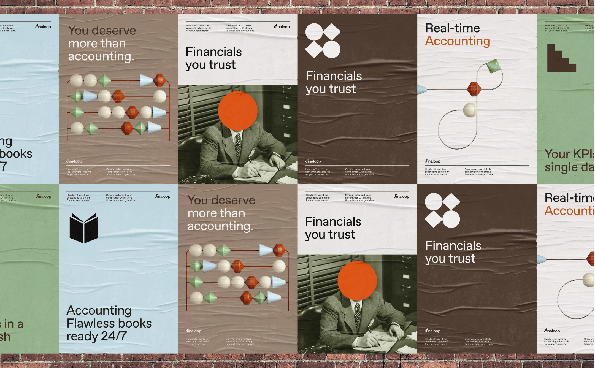
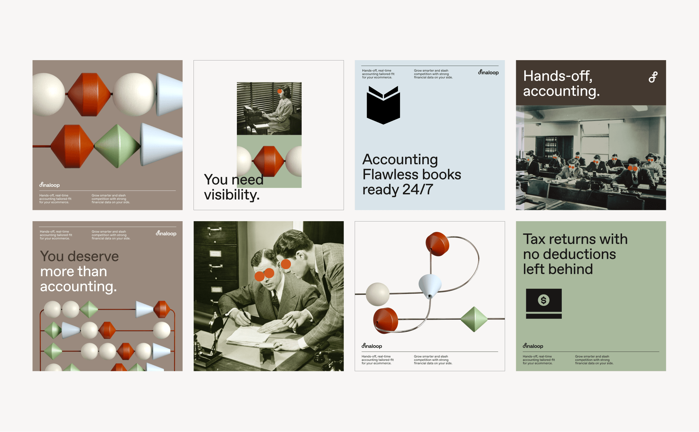
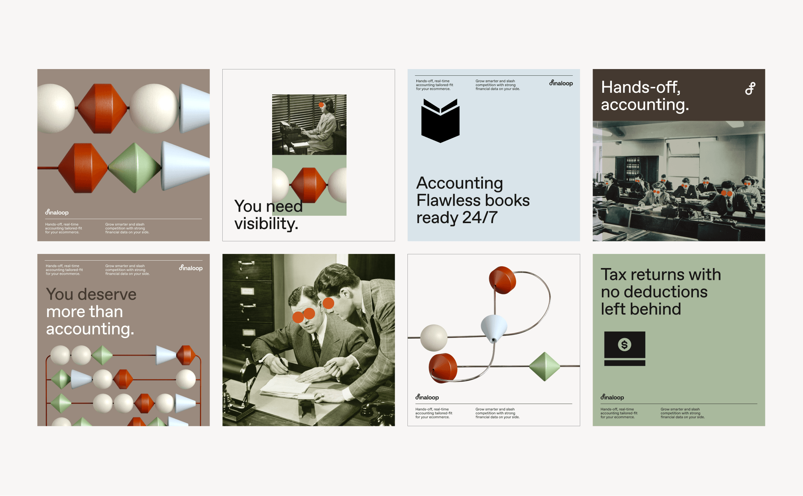

A 10-day brand sprint for Finaloop.
you know that feeling when you're juggling a million things, and it seems like everything's on the brink of chaos? that's where finaloop steps in for eCommerce founders. they give you real-time financial insights that actually make sense, helping you streamline operations and cut down on errors. forget about the old-school accounting headaches. we knew we had to break the mold. traditional accounting colors? yeah, we used them, but flipped the script. and that 3d abacus? it’s not just for show. it represents the seamless transformation and rebellious spirit that finaloop brings to the table. this isn’t just about looking good. it’s about living the experience. ready to ditch the old ways and get on board with something that actually works? Client | Finaloop Creative director | Eden Vidal Art direction | Anastasia Vlasenko Brand designer | Kate Holub

 





 

 
